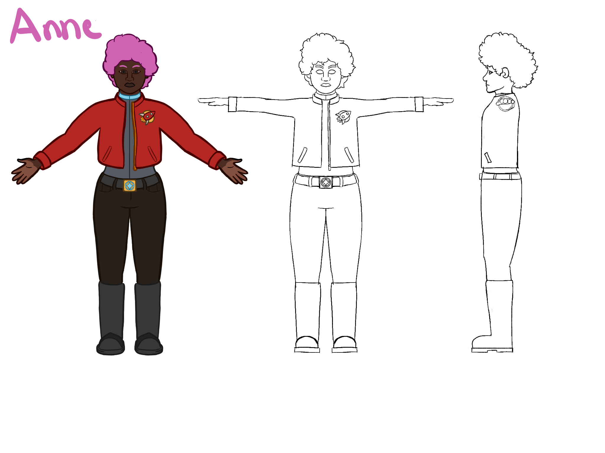

Artist — Game Designer — Developer
Artist — Game Designer — Developer
Character design
I designed two characters in krita, and made them in blender.



Storyboarding
 The two characters are sisters, fighting over an ideological wedge between them, and different interpretations of their mother's wishes. Anne and Beth were in a resistance group, yet Anne left because she saw corruption among those managing the cells, being bribed by those they were suppsoed to be fighting against. Beth, however, stayed because she didn't want to abandon her history, allowing those uppers to use her as an experiment for technological augmentations. In the fight, Beth wins but, after putting her knife to Anne's throat, realises she can't carry through with the threat. In a full story, this would put Beth in a bad situation with the higher-ups, worsen her cognitive dissonance and begin the path to her eventual change of allegiance.
The two characters are sisters, fighting over an ideological wedge between them, and different interpretations of their mother's wishes. Anne and Beth were in a resistance group, yet Anne left because she saw corruption among those managing the cells, being bribed by those they were suppsoed to be fighting against. Beth, however, stayed because she didn't want to abandon her history, allowing those uppers to use her as an experiment for technological augmentations. In the fight, Beth wins but, after putting her knife to Anne's throat, realises she can't carry through with the threat. In a full story, this would put Beth in a bad situation with the higher-ups, worsen her cognitive dissonance and begin the path to her eventual change of allegiance.
Animation
Here is the animation. I used metarigs to rig the characters and blender to animate them.